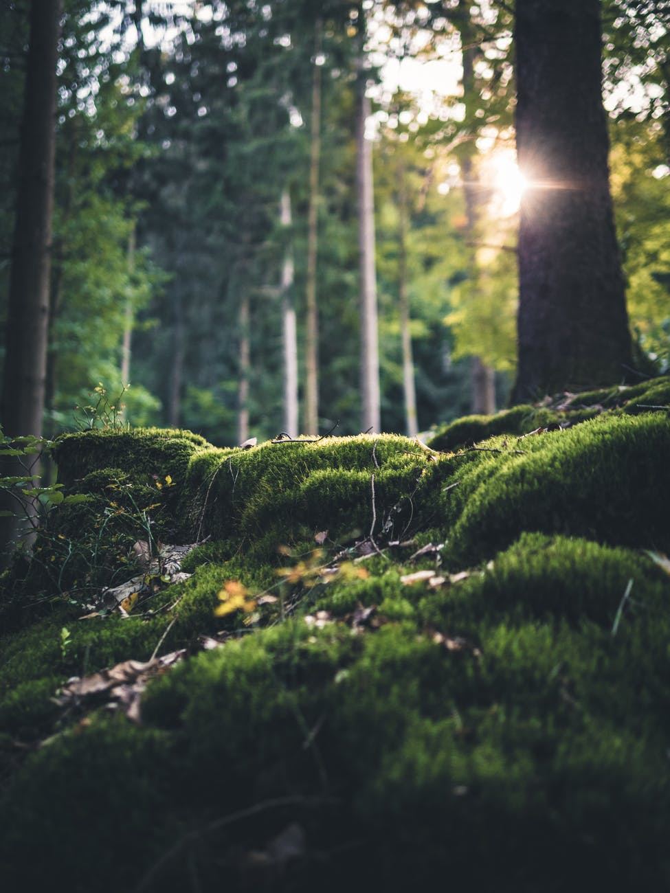

Das Lernstudio "Prima Klima" vom Evangelischen Gymnasium Werther hat vor, neue Bäume im
Wald am Hotel Bergfrieden in Werther zu pflanzen.
Wir wollen und sollten mehr Bäume pflanzen, da viele Bäume von Borkenkäfern angegriffen
werden oder abgeholzt werden. Außerdem nehmen sie eine gewisse Menge Kohlenstoffdioxid
auf, was sie für die Photosynthese benötigen. Dabei entsteht Sauerstoff als 'Abfallprodukt', der für
Menschen und Tiere überlebenswichtig ist.
Wir Pflanzen Bäume!
Informationen
In diesem Wald stehen viele Nadelbäume, die meisten sind Fichten. Da der Boden in unserer Region nicht sehr tief ist und man schnell auf Stein stößt, haben andere Baumarten keinen Platz, ihre Wurzeln zu schlagen.

Wir pflanzen die Buche, weil sie einerseits viel CO2 speichert und die Rinde dieser für Insekten
und Käfer kaum zugänglich ist. Zudem bildet sie relativ viel Laub, welches für viele Kleinlebewesen
ein Zuhause und Nahrung bietet. Später wird das Laub zu nahrhaftem Humus (Waldboden).
Aber auch die Koreanische Tanne wurde nicht ohne Grund gewählt: sie kommt besonders gut mit dem deutschen Klima zurecht.
Durchführung
Als wir am Wald angekommen sind, wurden wir zuerst in 3 Gruppen aufgeteilt. Diese 3 Gruppen haben abwechselnd die Bäume gepflanzt,
angepinselt und freigeschnitten. Wir haben uns zu zweit zusammen gefunden einer hat ein ungefähr 20-30cm tiefes loch gegraben. Der zweite in der Gruppe hat eine
Eisenstange bekommen, mit der er Wurzeln und Steine entfernt hat.
Danach hat einer den kleinen Setzling im Loch fixiert und mit Erde zugegraben. Am ende sah man von Weitem viele kleine Bäume in dem Boden.

Damit rehe die Triebe von den Setzlingen nicht abfressen haben wir die Bäume mit passender Farbe angepinselt und sie für Rehe damit ungeniesbar gemacht. Jede 2-3er Gruppe hat ein Eimer mit Farbe und Pinseln bekommen mit dem sie von setzling zu setzling gegangen sind. Später hat man dann viele kleine weiße Bäume gesehen. Die Farbe ist bei manchen Teilnehmern an die Kleidung gekommen es hat zwar gedauert aber ist zum Glück abgegangen.

In der Region gibt es viele Brombeersträucher, die neunen Bäume vom wachsen abhalten würden. Im letzten Schritt haben wir diese etwas mit gewöhnlichen Rosenscheren freigeschnitten.
Rückmeldungen
Eine Woche Später haben wir uns bei einigen Teilnehmern erkundigt, wie sie diese Aktion fanden.
Die meisten fanden die Aktion sehr gut, weil es dem Klima geholfen hat und eine gute Ergänzung zum Unterricht unserer Klasse war.
Viele meinten, dass man vorher garnicht denkt, wie viel Arbeit das Pflanzen von neunen Bäumen ist.
Leider konnten einige an dem Tag nicht mitkommen, weil sie krank waren oder bei einer anderen Schulaktion sein mussten.
"Mit dem Spaten gegen den Klimawandel" - ist die Überschrift von einem Zeitungsartikel im Haller Kreisblatt.
Am 28.02.2022 wurde ein Bericht über dieses Projekt veröffentlicht:
"Zwei achte Klassen erstiegen am Freitagmorgen einen Hang in Teuto oberhalb der Gaststätte Bergfrieden.
Die Schüler und Schülerinnen sind bewehrt mit Pflanzwerkzeugen. Jeder ihrer Tritte sucht Halt - so
steil geht es hinauf.
Wo einst Fichten standen, ragen nur noch wenige, tote Stämme wie riesige
Zahnstocher aus dem Boden. [...] Carla schlägt mit ihrer Eisenstange ein Loch in den Boden. Die
Achtklässlerin wil mit dem Hieb Osning-Sandsteinlage aufbrechen, die die Kalamitätsfläche unter der
dünnen Humusschicht durchzieht. [...]"
Samuel Merheim hat in unserer Schülerzeitung, der Schelle, ebenfalls einen Artikel zu unserem Projekt geschrieben:
"DER TAG DER GEPFLANZTEN BÄUME!
Nachdem wir uns in der Schule auf Corona getestet haben (Wir waren alle Negativ), ging es los.
Erst sind wir von der Schule in den Wald gegangen, wo uns ein netter Mann [der Förster] einige spannende
Informationen zum Bäume pflanzen erzählt hat. Nachdem jeder einen Spaten, eine Rosenschere
oder eine Eisenstange hatte sind wir hoch zu einer Lichtung gewandert wo wir uns in 3 Gruppen
eingeteilt haben:
1. Bäume pflanzen: Wir haben zuerst ein Loch mit Spaten und Eisenstange gegraben, danach haben wir
die frisch gekauften Bäume in die Löcher gepflanzt und diese schön zu gebuddelt. Diese sollten
dann wachsen und zu großen Buchen werden. [...]"